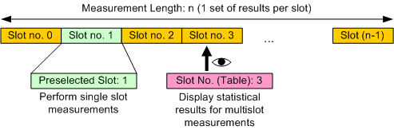

Defining the Scope of the Measurement
The WCDMA multi-evaluation measurement is a multislot application: The R&S CMW can measure up to 120 consecutive WCDMA slots (8 frames) in a single measurement cycle and store the measurement results for each slot. The total number n of slots per measurement cycle is termed the "Measurement Length" (slots no. 0 to n – 1).
Within this measurement interval, two individual slots are selected for a more detailed analysis:
- The "Preselected Slot" is used for single slot measurements, e.g. to measure:
– The adjacent channel leakage power ratio (ACLR), – The spectrum emissions, – The code domain monitor results and – Single slot modulation measurements (vs. chip results). - For the multislot measurements, statistical results are measured for all slots. The results are displayed for one slot at a time, the "Slot Number (Table)". Statistical results are relevant in particular if the measurement length is measured repeatedly.

Preselected slot and slot number (table)
The preselected slot and the slot number (table) are independent from each other.
See also: "Statistical Settings"
The trigger settings ensure WCDMA slot and frame synchronization with the analyzed UL WCDMA signal. The measurement length can start with any WCDMA slot number, see parameter "Synchronization". |